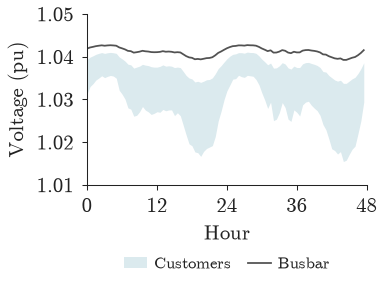

Power flow#
popo.powerflow reads a solved circuit’s results as tables and steps a circuit through time.
It needs the opendss extra.
Results of a solved circuit#
Each results function takes the opendssdirect module holding a solved circuit and returns a long
DataFrame. Circuit has the same functions as methods, for example circuit.bus_voltages().
Function |
One row per |
|---|---|
bus and connected phase |
|
line and phase |
|
line |
|
element and phase, for one element type |
|
circuit, as a dictionary |
from pathlib import Path
from popo.network import Circuit
from popo.powerflow import bus_voltages, element_powers, line_currents, line_losses
FEEDER = Path("tests/data/dss_uk_network_17_1_1149/master_network_17_1_1149.dss")
circuit = Circuit.load(FEEDER)
dss = circuit.dss
bus_voltages(dss).head()
| bus | phase | vmag_pu | vangle_deg | kv_base | |
|---|---|---|---|---|---|
| 0 | sourcebus | 1 | 1.000 | -7.429e-06 | 6.351 |
| 1 | sourcebus | 2 | 1.000 | -1.200e+02 | 6.351 |
| 2 | sourcebus | 3 | 1.000 | 1.200e+02 | 6.351 |
| 3 | 1149 | 1 | 0.998 | -1.921e-01 | 6.351 |
| 4 | 1149 | 2 | 0.998 | -1.202e+02 | 6.351 |
Every bus is reported on the phases it is actually connected to. A single-phase customer on phase 2 has one row, labelled phase 2.
line_currents(dss).head(3)
| line | bus1 | bus2 | phase | current_a | |
|---|---|---|---|---|---|
| 0 | sourcez | sourcebus | 1149 | 1 | 11.395 |
| 1 | sourcez | sourcebus | 1149 | 2 | 11.920 |
| 2 | sourcez | sourcebus | 1149 | 3 | 9.917 |
losses = line_losses(dss)
losses.sort_values("p_loss_kw", ascending=False).head(3)
| line | bus1 | bus2 | p_loss_kw | q_loss_kvar | |
|---|---|---|---|---|---|
| 253 | line1_1149_171_cmpd_94 | 1_1149_171_53 | 1_1149_171_92 | 1.838 | 1.003 |
| 166 | line1_1149_171_cmpd_7 | 1_1149_171_32 | 1_1149_171_53 | 1.218 | 0.662 |
| 240 | line1_1149_171_cmpd_81 | 1_1149_171_1 | 1_1149_171_32 | 1.178 | 0.809 |
element_powers(dss, "transformers")
| name | phase | p_kw | q_kvar | |
|---|---|---|---|---|
| 0 | tr171_11491_1 | 1 | 70.093 | 17.515 |
| 1 | tr171_11491_1 | 2 | 69.141 | 30.426 |
| 2 | tr171_11491_1 | 3 | 58.433 | 23.229 |
element_powers accepts "lines", "loads", "pvsystems", "storages" and "transformers". At this
defined loading the transformer carries about 198 kW, unevenly split across its three phases.
Time series#
solve_time_series() steps the circuit through its load shapes, by default in
30-minute steps. Here each customer is first given a household demand profile with
assign_household_profiles() (see Scenarios).
import numpy as np
from popo.network import residential_loads
from popo.powerflow import solve_time_series
from popo.scenarios import assign_household_profiles
household_pool = pd.read_parquet("tests/data/uk_household_pu_96.parquet").to_numpy()
customers = residential_loads(dss)
assign_household_profiles(dss, customers, household_pool, np.random.default_rng(1))
transformers = list(circuit.transformers)
report = solve_time_series(dss, transformers, horizon=96, buses=[bus for _, bus in customers])
report.records.head()
| step | trafo | kva_rating | p_kw | q_kvar | s_kva | v_lv_pu | v_lv_min_pu | head_p_kw | head_q_kvar | |
|---|---|---|---|---|---|---|---|---|---|---|
| 0 | 0 | tr171_11491_1 | 500.0 | 34.210 | 11.301 | 36.028 | 1.042 | 1.042 | 34.242 | 11.301 |
| 1 | 1 | tr171_11491_1 | 500.0 | 30.399 | 10.036 | 32.012 | 1.042 | 1.042 | 30.424 | 10.003 |
| 2 | 2 | tr171_11491_1 | 500.0 | 28.253 | 9.326 | 29.753 | 1.042 | 1.042 | 28.275 | 9.277 |
| 3 | 3 | tr171_11491_1 | 500.0 | 25.759 | 8.500 | 27.125 | 1.042 | 1.042 | 25.777 | 8.431 |
| 4 | 4 | tr171_11491_1 | 500.0 | 24.188 | 7.980 | 25.470 | 1.043 | 1.043 | 24.204 | 7.901 |
report.records has one row per step and monitored transformer: the active, reactive and apparent
power at its secondary winding, the mean and minimum voltage on its secondary busbar, and the power at
the head of the feeder. Passing buses also records the voltage at each of those buses, which
voltage_traces() returns as one array per bus.
from popo.plotting import line_style, tokens
line_style.configure(latex=False)
traces = np.array(list(report.voltage_traces().values()))
hours = np.arange(96) / 2
busbar = report.records["v_lv_pu"].to_numpy()
fig, ax = line_style.new_panel()
ax.fill_between(hours, traces.min(axis=0), traces.max(axis=0), color=line_style.BAND_COLOR, lw=0,
label="Customers")
ax.plot(hours, busbar, color=tokens.TEXT_MUTED, lw=line_style.LINE_WIDTH, label="Busbar")
ax.set_xticks([0, 12, 24, 36, 48])
ax.set_xlim(0, 48)
ax.set_xlabel("Hour")
line_style.set_y_axis(ax, traces, busbar)
ax.set_ylabel("Voltage (pu)")
line_style.finish(ax)
line_style.legend_below(ax, ncol=2)
line_style.show(fig)

Over the two days, customer voltages range from 1.015 to 1.041 pu, all below the busbar, which is held near 1.04 pu by the transformer.
Convergence#
A time-series solve can fail to converge at some steps, most often when many inverters run a Volt-VAr control loop. OpenDSS still reports a solution at those steps, so the report records how many steps diverged.
report.converged, report.diverged_steps, report.total_steps
(True, 0, 96)
At a diverged step, each recorded customer voltage is NaN. To stop a study when any step diverges, call
require_convergence(), which raises
ConvergenceError.
Penetration sweeps#
run_uk_sweep() and run_us_sweep() run a grid of EV and
PV penetration levels on one feeder. Each scenario builds a fresh circuit from the same seed, so the
customers who have PV at 40 % penetration still have it at 60 %. A sweep on this feeder takes several
minutes, so it is not run on this page; the
time series tutorial runs one.
Limitations#
The step length is fixed for a run, 30 minutes by default. Shorter events, such as a cloud passing, are averaged out.
A bus’s recorded voltage is the mean across its connected phases. For a single-phase customer that is the voltage it sees; for a three-phase bus it hides any imbalance between phases.
The solver iterates the inverter control loop up to 200 times per step by default. A step that needs more is reported as diverged; raise
max_control_iterationsonly after checking why.